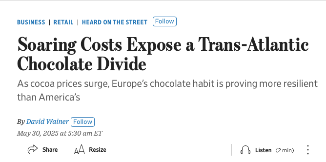
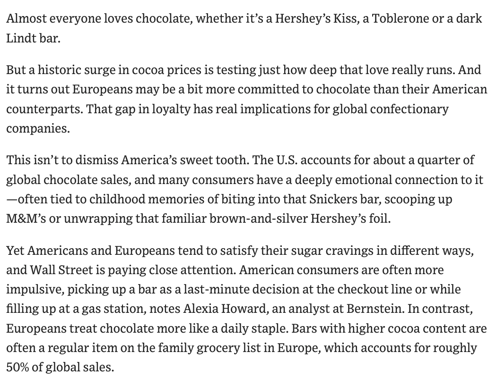
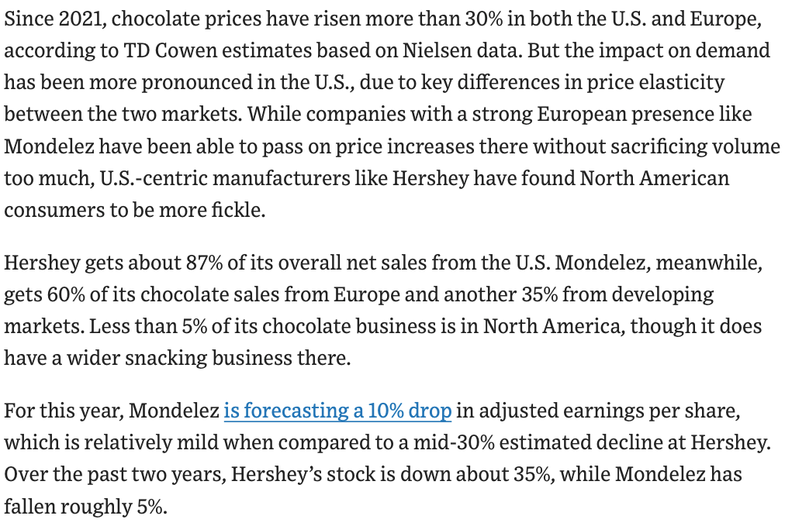

RSC Economics Experience · July 2026
Class 2
Elasticity of Demand and Costs
Meng Hsuan “Rex” Hsieh
Press → to begin
Agenda for Today
Elasticity of Demand and Costs
- Finishing the supply/demand model (simultaneous shifts)
- Elasticity of demand and economic behavior
- Firms’ costs and the sunk-cost fallacy
Supply and Demand
More on Supply & Demand
Press ↓ to continue
Recap · 1 of 3
Scarcity, Opportunity Cost, and the Margin
For smooth, divisible choices with falling MB and rising MC, the best interior quantity satisfies \( MB = MC \). Compare endpoints too.
Recap · 2 of 3
Demand, Supply & Equilibrium
Recap · 3 of 3
Movements Along vs. Shifts of Curves
e.g. coffee’s price rises → slide up the demand curve, QD falls.
e.g. a frost hits coffee farms → the entire supply curve shifts left.
But be cautious about which market we are analyzing!
Mathematical Formulation
With Algebra Now
Press ↓ to view algebra examples
Algebra in supply & demand
Shocks vs. Movements
In economic analysis, it is critical to distinguish between these effects:
- In this model, a new equilibrium follows a shift in demand or supply, holding the market rules fixed.
- Demand or supply curve shifts occur if variables we were holding constant (tastes, income, government policies, costs of production) change.
- Movement along the demand or supply curve is a result of only price changes.
Algebra in supply & demand · 3
Excess Supply and Excess Demand
Algebra · Solution 3-5
Solution: Excess Supply & Demand
- Excess demand → buyers bid price up → QD falls, QS rises until P*
- Excess supply → sellers lower price → QD rises, QS falls until P*
Algebra · Solution 3-5
Excess Demand & Supply, Step by Step
Press → to add each element — axes are zoomed in (Q starts at 8) so the three prices are visible
Algebra in supply & demand
The Market Revision Process
We will assume markets are in equilibria unless otherwise specified.
Practice · Try On Your Own
✎ Practice: Finding Equilibrium
Group Work · Answers
Answers: Finding Equilibrium
Equilibrium: P* = $4, Q* = 12
Not in equilibrium: sellers cannot sell all they want, so they lower prices — the price falls toward \( P^* = 4 \). Let’s see it graphically ↓
Group Work · Answers
Finding Equilibrium, Step by Step
Press → to add each element of the graph
Group Work · Answers
Finding Equilibrium, Graphically
Supply and Demand Together
Simultaneous Shifts
Press ↓ to view simultaneous shifts
Simultaneous Shifts
Multiple Market Shocks
It is also completely reasonable to be in situations where both supply and demand shift, potentially in different directions.
These simultaneous changes have distinct implications for the market equilibrium quantity and price.
Simultaneous Shifts
Shifts Summary Table
Qualitative predictions of market shocks:
| Demand Shock | Supply Shock | Equilibrium Price (P) | Equilibrium Quantity (Q) |
|---|---|---|---|
| Shifts Out (↑) | Shifts Out (↑) | Ambiguous (↑↓=) | Increases (↑) |
| Shifts In (↓) | Shifts Out (↑) | Decreases (↓) | Ambiguous (↑↓=) |
| Shifts Out (↑) | Shifts In (↓) | Increases (↑) | Ambiguous (↑↓=) |
| Shifts In (↓) | Shifts In (↓) | Ambiguous (↑↓=) | Decreases (↓) |
When demand shifts out but supply shifts in, price clearly rises — but the change in quantity is ambiguous. Let’s visualize this →
Simultaneous Shifts · Ambiguous Quantity (1 of 2)
Demand Out + Supply In: When Demand Dominates
Demand shifts out and supply shifts in. Press → — here the demand shift is the larger one.
Simultaneous Shifts · Ambiguous Quantity (2 of 2)
Demand Out + Supply In: When Supply Dominates
Same shocks as before — but now the supply shift is the larger one, and the quantity flips.
Quantifying Market Behavior
Beyond Directions
With our understanding of supply and demand: we now know that each point on the supply and demand curves describes a particular willingness-to-produce and willingness-to-pay.
We can ask: How can we quantify behavior at various points along the supply and demand curves?
Group Work · Simultaneous Shifts
🎲 Group Work: Shifting Both Curves
Group Work · Answers
Answers: Shifting Both Curves
Compared to the old equilibrium \( (P^* = 4, Q^* = 12) \): quantity rose to 18, while the price happened to stay the same.
- When both curves shift out: \( Q^* \) increases for sure; \( P^* \) is ambiguous (↑↓=).
- Question 1 is exactly the knife-edge case: the shifts offset, so \( P^* \) did not change — consistent with the summary table! Let’s see it graphically ↓
Group Work · Answers
Shifting Both Curves, Step by Step
Press → to add each element of the graph
Group Work · Answers
Shifting Both Curves, Graphically
Measuring Sensitivity
Elasticity
Press ↓ to study elasticity definition
Elasticity
What is Elasticity?
Elasticity compares percentage changes in two variables.
It measures how responsive consumers or producers are to changes in market conditions.
Elasticity · Definition
Price Elasticity Without Calculus
Price elasticity compares the percentage change in quantity demanded with the percentage change in price, holding other factors constant.
Here b is the number of units quantity falls when price rises by $1. It is the magnitude of ΔQ/ΔP; the plotted P-versus-Q slope is −1/b.
For downward-sloping demand, ε is negative. We use |ε| for elastic versus inelastic.
Elasticity · Example
Point Elasticity Varies Along the Curve
- Midpoint: \( (Q=5, P=10) \)
- Horizontal intercept: \( (Q=10, P=0) \)
- Vertical intercept: \( (Q=0, P=20) \)
Elasticity · Solution
Elasticity at the Midpoint and Near the Ends
For \(Q=10-0.5P\), use \(|\varepsilon|=0.5P/Q\).
These are endpoint limits on one sloped line. Perfectly elastic and perfectly inelastic demand curves are horizontal and vertical, respectively.
Elasticity · Linear demand
Elasticity Along a Linear Demand Curve
Elasticity regions on a linear curve:
- Elastic above the midpoint: \( |\varepsilon| > 1 \)
- Unit-elastic at the midpoint: \( |\varepsilon| = 1 \)
- Inelastic below the midpoint: \( |\varepsilon| < 1 \)

Elasticity · Interactive
Try It: Elasticity Along the Demand Curve
Drag the point along the demand curve \( Q = 10 - 0.5P \) and watch the point elasticity \( |\varepsilon| \) update live
Elasticity · Classification
Elastic or Inelastic?
- Elastic: |ε| > 1. Quantity changes by a larger percentage than price.
- Unit-elastic: |ε| = 1. The percentage changes have equal magnitudes.
- Inelastic: |ε| < 1. Quantity changes by a smaller percentage than price.
Demand tends to be more elastic when close substitutes exist, the purchase uses more of the budget, or buyers have more time to adjust.
Elasticity · Check Yourself
Which Curve Is Relatively Elastic?
Which demand curve — A or B — is relatively elastic?
Elasticity · Slopes
Compare Slopes at the Same Point
At the same price and quantity, using the same axis units, the flatter demand curve is more elastic.
Slope alone cannot compare elasticity at different points. Elasticity also depends on P/Q.
Practice · Try On Your Own
✎ Practice: Own-Price/Point Elasticity of Demand
Group Work · Answers
Answers: Point Elasticity
Unit-elastic — this is exactly the midpoint of the linear demand curve.
Group Work · Answers
Point Elasticity, Step by Step
Press → to add each element of the graph
Group Work · Answers
Elasticity Between Two Prices
Suppose price rises from $10 to $12 and quantity falls from 100 to 80, with other demand factors unchanged.
The denominators are the averages: quantity 90 and price $11. Demand is elastic over this interval.
Why use averages? Reversing the direction gives the same elasticity magnitude.
Real World Application
Applying our Understanding
Press ↓ to view WSJ Case Study
WSJ Case Study · Part 1
Cocoa Price Shocks & Chocolate Market
The Wall Street Journal ran an article covering cocoa supply shocks:



WSJ Case Study · Part 2
Reading the Chocolate Case
The supplied article excerpt describes different sales responses to rising chocolate prices in the U.S. and Europe.
- Which market appears more responsive to price?
- What price and quantity data would we need to calculate elasticity?
- What else might explain changes in sales?
Treat the excerpt as a historical case. Company earnings and stock returns do not measure demand elasticity.
WSJ Case Study · Discussion
What Can We Conclude?
For a small price increase: total revenue rises with inelastic demand and falls with elastic demand. Profit also depends on costs.
WSJ Case Study · Elasticity in one picture
One Price Rise, Two Responses
In this illustrative graph, both regions start at the same price and quantity (the common point at P0). A single, common price increase makes quantity fall — by very different amounts. Press →.
Elasticity · Interactive
Build Your Own Demand Curve
Q = − · P
Type two positive numbers — the intercepts move. Then drag the point along the curve to read the elasticity; the dotted lines mark the midpoint.
Alternative Dimensions
Other Elasticity Measures
Press ↓ to study income & cross-price elasticity
Other elasticity measures
Income and Cross-Price Elasticities
Keep the sign. Hold other relevant factors constant. “Inferior” describes a response to income, not product quality.
Other elasticity measures · Examples
Applying Income Elasticity
What is his income elasticity of demand for sparkling water?
Is sparkling water a normal or inferior good for Rex?
Elasticity · Solution
Solution: Income Elasticity
- Income elasticity is positive (0.81 > 0)
- ⇒ Sparkling water is a normal good for Rex
- A 1% increase in income leads to a ~0.81% increase in purchases
Other elasticity measures · Examples
Applying Cross-Price Elasticity
What is the cross-price elasticity of demand of (tickets for) AO?
Are WAF and AO tickets complements or substitutes?
Elasticity · Solution
Solution: Cross-Price Elasticity
- Cross-price elasticity is positive (0.55 > 0)
- ⇒ WAF and AO tickets are substitutes
- When WAF raises prices, consumers switch to AO
Group Work · Other Elasticities
🎲 Group Work: Income & Cross-Price
Compute the income elasticity of demand. Are streaming subscriptions a normal or inferior good for her?
Compute the cross-price elasticity of demand for creamer. Are coffee and creamer complements or substitutes?
Group Work · Answers
Answers: Income & Cross-Price
Positive ⇒ streaming subscriptions are a normal good for her.
Negative ⇒ coffee and creamer are complements.
Switching sides
From Demand to Supply
So far we’ve studied the demand side — how buyers respond to price (elasticity).
Now we flip to the supply side — how firms make decisions: their costs, sunk costs, and thinking on the margin.
Press → to study firms’ decision-making
Part 4
Sunk Costs & Decision-Making
Press ↓ to continue
Decision-Making
Which Costs Matter Now?
Compare the additional revenue with the additional cost of the decision.
A previously purchased item can still have a resale value. Keeping it gives up that value, which is an opportunity cost.
Decision-Making
Sunk Costs
Sunk costs must be ignored from the point of view of forward-looking decision-making.
Decision-Making · Case Study 1
Headphone Reseller: Keep or Sell?
Rex paid $500 each for 1,000 headphones. That payment cannot be recovered from the original seller. Another reseller now offers $450 each.
Keeping the stock for a year requires $160 per unit in maintenance; selling now avoids it. Ignore discounting and all other costs.
Decision-Making · Case Study 2
Headphone Reseller: One More Sale
Rex has sold his existing stock. To fill one extra order, he must buy one new headphone for $500 and pay $160 to prepare that unit for sale.
His staffing, rent, utilities, and own pay do not change for this order; there is spare capacity.
Market Structure · Introduction
Economic Profit Counts Opportunity Costs
Rex earns $40,000 after paying the shop’s bills. He could earn $40,000 in another job. What is his economic profit?
Group Work · Decision-Making
🎲 Group Work: Thinking on the Margin
Should he attend the fair? Justify using marginal reasoning.
What is his marginal cost of selling one additional headset?
Group Work · Answers
Answers: Thinking on the Margin
- The $2,000 booth fee is sunk — it is gone whether or not he attends, so it must be ignored.
- Marginal benefit ($500) < Marginal cost ($600) ⇒ do not attend.
- Attending “to get his money’s worth” would be the sunk cost fallacy.
Rent is a fixed cost — it does not change with one more unit sold, so it is excluded from marginal cost.
Part 3
Firms and Cost Functions
Press ↓ to study cost structures
Firms and Costs
Understanding Cost Functions
In economics, firms are treated as a “black box” producing goods. Because producing anything requires resources, it involves trade-offs. We capture these trade-offs in terms of cost functions.
Firms and Costs
Fixed vs. Variable Costs
There are two types of production costs that we care about:
Firms and Costs
Total Cost and Marginal Cost
\[ C(Q)=FC+VC(Q) \]
For whole units, the cost of the next unit is C(Q + 1) − C(Q). Over a small interval, marginal cost is ΔC/ΔQ.
For smooth cost curves, we will supply the MC formula so you can focus on the economic decision.
Firms and Costs
Profit Function with Costs
Combining revenue and cost functions, we get the complete profit function:
Profit maximization involves choosing \( Q \) to maximize this expression.
Firms and Costs
Average Cost Functions
For Q > 0, average costs divide each cost by output:
Firms and Costs · Example
Calculate Fixed, Variable, and Average Costs
\[ C(Q)=100+10Q+Q^2,\qquad MC(Q)=10+2Q\quad\text{(given)} \]
- Identify FC and VC(Q).
- Write ATC, AFC, and AVC for Q > 0.
- At Q = 5, find total cost, ATC, and the given MC.
Use algebra and substitution; you do not need to differentiate.
Costs · Solution
Solution: Cost Functions
\[ FC=100,\qquad VC(Q)=10Q+Q^2 \]
\[ ATC=100/Q+10+Q,\quad AFC=100/Q,\quad AVC=10+Q \]
The cost of the sixth whole unit is C(6) − C(5) = 196 − 175 = $21. The given smooth MC at Q = 5 is $20.
Firms and Costs · Curves
Visualizing Cost Curves
For the U-shaped average cost curves shown:
- \( MC \) passes through the minimum points of both \( ATC \) and \( AVC \).
- \( AFC \) drops continuously as quantity increases.
- The gap between \( ATC \) and \( AVC \) shrinks as \( AFC \) decreases.
Group Work · Cost Functions
🎲 Group Work: Cost Functions
Group Work · Answers
Answers: Cost Functions
MC = ATC = 30! \( Q = 5 \) is exactly the minimum of ATC — the MC curve crosses ATC at its lowest point, just as the cost-curve graph showed. Let’s see it graphically ↓
Group Work · Answers
Cost Curves, Step by Step
Press → to add each element of the graph
Group Work · Answers
Cost Curves, Graphically
Recap
Three Quick Checks
- A 1% price rise reduces quantity demanded by about 2%. Is demand elastic? What happens to revenue?
- A fixed fee has already been paid and cannot be refunded. Does it affect whether to accept one more order?
- Can a firm have positive accounting profit and zero economic profit?
For next time
Preparation for Next Class
Read an article posted on Canvas; prepare for Wednesday’s quiz on Class 1 and 2 content
See you tomorrow (@ 2:45pm sharp)!
Thank you!